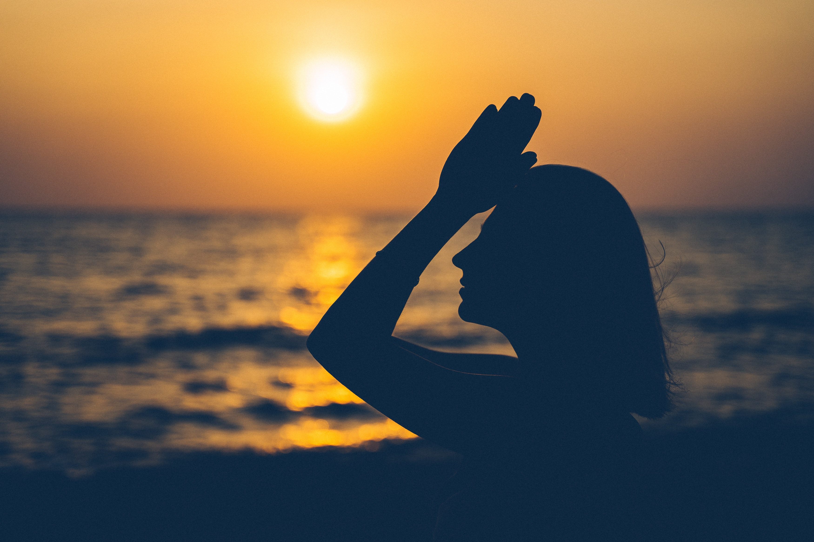
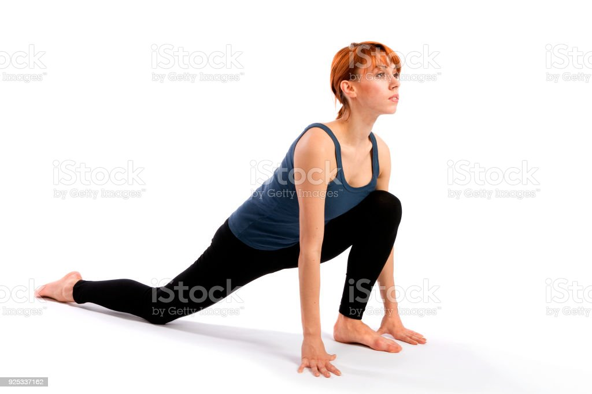

Surya Namaskara
Surya means Sun and Namaskara means salutation. It is basically salutating the Sun through postures. Surya Namaskara is a series of 12 physical postures. These postures stretch various muscles and spinal column and give flexibility to the whole body.

Let us perform Surya Namaskara by following the steps given below:
1.Pranamasana (Prayer Pose) Stand erect with feet together. Join the palms
together in front of the chest in a namaskara
mudra. Remain in this posture for a few
seconds
2.Hastauttanasana (Raised Arms Pose): Inhaling, raise both arms above the head and slightly bend trunk backward. Remain in this posture for a few seconds

3.Hasta Padasana (Hand to Foot Pose): Exhaling, bend forward from the waist keeping the arms by the side of the ears until palms touches the floor on both sides of the feet and the forehead touches the knees. Remain in this posture for a few seconds.

4.Ashwa Sanchalanasana (Equestrian Pose): Extend the right leg behind as far as possible. Bend the left knee and keep the left foot on ground between the palms. Remain in this posture for a few seconds.
5. Dandasana (Stick Pose): Exhaling, bring the left leg back to join with the right leg. Simultaneously, raise the buttocks and lower the head between the arms so that the body forms a triangle with the floor. Try to place the heels flat on the ground. Remain in this posture for a few seconds.

6.Ashtanga Namaskara (Salute with Eight Parts): Gently lower knees, chest and chin to the ground with normal breathing. Toes, knees, chest, hands and chin should touch the floor. The buttocks are kept up. Remain in this posture for a few seconds
.jpg)
7. Bhujangasana (Cobra Pose):Lower the hips while pushing the chest forward, and raise the trunk upward until the spine is fully arched and the head is facing up. The legs and lower abdomen remain on the floor. Inhale while raising torso. Remain in this posture for a few seconds

8.Adho Mukha Svanasana (Downward-Facing Dog Pose): Exhaling, lower the trunk keeping the palms flat on the floor. Place both feet flat on the ground. Raise the buttocks and lower the head between the arms. Remain in this posture for a few seconds.
9.Ashwa Sanchalanasana (Equestrian Pose): Inhaling, extend the left leg behind as far as possible. Bend the right knee and keep the right foot on the ground between the palms. Remain in this posture for a few seconds.
10. Hasta Padasana (Hand to Foot Pose): Exhaling, bring the stretched left foot forward. Join both legs, straighten the knees and bend forward. Bring the head near the knees. Palms should be placed on floor beside the feet. Remain in this posture for a few seconds.
11.Hastauttanasana (Raised Arms Pose): Inhaling raise both arms and the trunk slowly. Bend backwards with arms stretched up. Stay in the posture for a few seconds.
12.Pranamasana (Prayer Pose): Breathing out, come to an erect and straight position. Bring the hands in front of the chest and join the palms together in namaskara posture. Breathe normally in this position. Remain in this posture for a few seconds.
 Repeat the sequence, starting with the opposite leg (step 4), to complete one round of Surya Namaskar.
Repeat the sequence, starting with the opposite leg (step 4), to complete one round of Surya Namaskar.Remember to synchronize each movement with your breath and maintain a steady rhythm throughout the practice.
| Do's | Don't |
|---|---|
| • Synchronise breathing with the movements of the body. • Inhale during upward bending and exhale during forward bending |
• Do not practice beyond your capacity. • The person having spinal cord injury should not practise surya namaskara. |
• It helps to increase strength, endurance and flexibility.
• It improves concentration.
• It removes excess fat.
• It gives energy to the body.
• It helps in increasing the height of growing children and
tones up their body.
• It warms up the body.
• It improves blood circulation all over the body.
• It provides flexibility to the whole body.